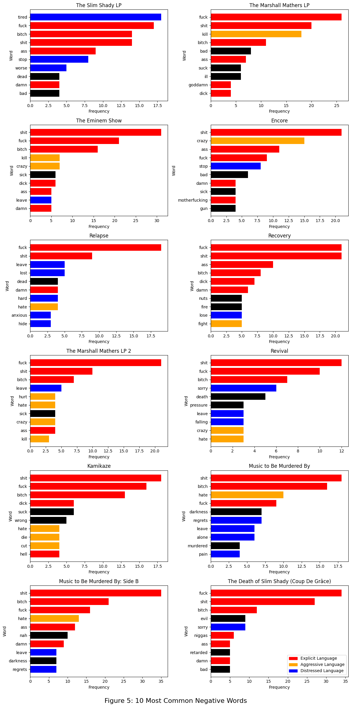
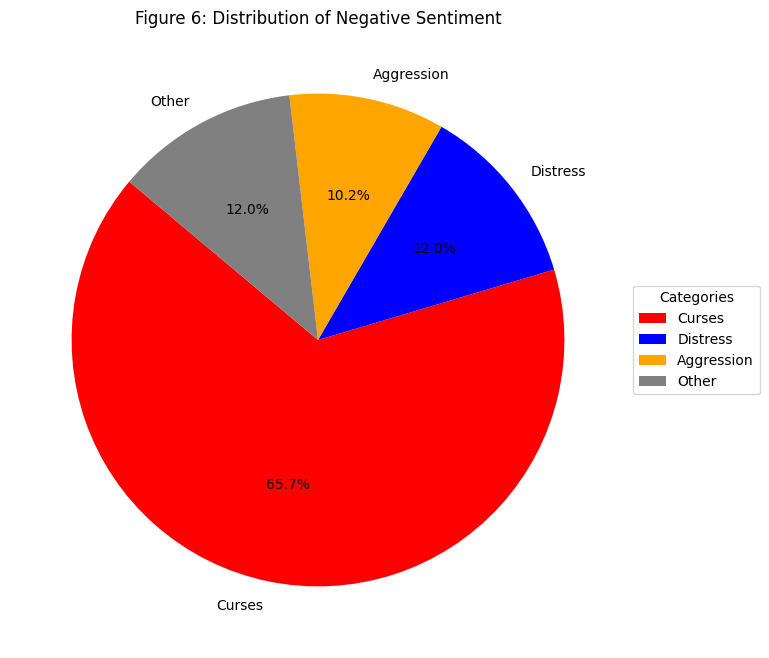

Project Overview
In the genres of hip-hop and rap, Eminem is a rapper whose clever and technical delivery of provocative lyrics has made him famous among the general public. While his lyrical skills are undisputed, it is the raw emotions contained within that truly allows him to stand-out among his peers. Eminem frequently tackles dark subjects, such as domestic violence, drug addiction, murder, and rape while also exploring more vulnerable topics such as mental illness and fatherhood. My project explores how these intense subjects are presented by performing sentiment analysis on Eminem’s discography across his albums. Utilizing the VADER analyzer from nltk’s sentiment module, this paper will be used to uncover the emotional trends, patterns, and themes present in his works. More specifically, this project seeks to answer the question:
- How does the sentiment in Eminem’s lyrics reflect the themes of struggle and resilience across his albums?
The motivation for this project was the release of Eminem’s newest album, The Death of Slim Shady (Coup de Grâce). I have never explored Eminem as an artist, although I was aware of his hit tracks such as “Without Me” and “My Name Is.” When I listened to his song “Temporary”, which is a musical letter to his daughter when he is dead, I was introduced to the emotional intensity and autobiographical aspects of his work and was struck by the contrast to his deranged lyrics that I best knew him by. By analyzing sentiment trends and how they interact with common topics in Eminem’s music, I hope to present a nuanced understanding into how these sentiments translate the theme of personal growth represented in his discography.
Methods
Focusing the Data
To begin analyzing sentiment across Eminem’s discography, the set of data first had to be determined. Three subsets were quickly eliminated:
1. Compilation albums, such as Curtain Call: The Hits, repeated songs present in previous albums and prioritized hits over a cohesive musical experience.
2. Deluxe editions of albums included extra tracks which typically did not make the original releases cut and might not reflect the intended thematic progression of the album.
3. Singles were commonly either pre-releases before being added to the following album or collaborations with other artists whose own sentiment characteristics could distort the collected data.
This resulted in an original collection size of 13 albums to analyze. Upon further investigation, Eminem: The Re-Up was found to also be a compilation album, bringing the collection size down to 12 albums.
Collecting the Data
It quickly became apparent that Eminem’s lyrics would need to be webscraped, as the many databases online created to store and present musical artist’s lyrics only contained Eminem’s first couple releases. Genius.com was selected, due to my personal favorable experience with the website and the vast lyrical library it contains. A custom web scraper was coded in Python, using the Python libraries request and BeautifulSoup. After scraping the lyrics for every song, the data was organized into a nested dictionary, with the hierarchy of album_name –> song_name –> lyrics.
A major challenge was getting past Genius.com’s bot detection and coverage by Cloudflare. Midway through testing the scraper in the project’s Jupyter server, my requests stopped working, encountering a 403 output. To get around this, I found I needed to run my code in my local environment. I utilized Python’s proxy library and rotated proxies using my PC’s terminal. The data was then exported to the Git repository by saving the dictionary into the .txt file “lyrics_lines.txt” using Python’s json library.
[nltk_data] Downloading package vader_lexicon to
[nltk_data] /home/jovyan/nltk_data...
[nltk_data] Package vader_lexicon is already up-to-date!
[nltk_data] Downloading package stopwords to /home/jovyan/nltk_data...
[nltk_data] Package stopwords is already up-to-date!
# NOTE: I was only able to run this on my local environment. As I continued testing, I needed to begin rotating my proxies# to avoid my IP being pinged# retrieve the link for every album's genius.com pageresponse = requests.get("https://genius.com/artists/albums?for_artist_page=45&id=Eminem")html_string = response.textdocument = BeautifulSoup(html_string, 'html.parser')album_list = document.find_all("a", class_="album_link") # <a class="album_link"> tags contain the html#albums contains the desired album namesalbums = ["The Slim Shady LP", "The Marshall Mathers LP", "The Eminem Show","Encore", "Eminem Presents the Re-Up", "Relapse", "Recovery", "The Marshall Mathers LP 2","Revival", "Kamikaze", "Music to Be Murdered By", "Music to Be Murdered By: Side B", "The Death of Slim Shady (Coup De Grâce)"]album_links = []for a in album_list:if a.text in albums: # select desired albums from list album_links.append((a.text, a['href'])) # album links is (album name, link)# create dictionary containing scraped texteminem_lyrics = {}for album in album_links: eminem_lyrics[album[0]] = {} # key = album name, val = dictionary album_page = requests.get("https://genius.com"+ album[1]) # go to album page album_html = album_page.text doc = BeautifulSoup(album_html, 'html.parser') songs_list = doc.find_all("div", class_="chart_row-content") # this tag's field contains the list of songsfor s in songs_list:# <a href = song_link> song_name </a> a = s.find('a') s_title = a.find('h3').get_text(strip=True) eminem_lyrics[album[0]][s_title] = {} # key = album_name -> song_name, val = dictionary s_link = a['href']# now use the link s_link to go to the song's lyrics page lyrics_page = requests.get(s_link) lyrics_html = lyrics_page.text d = BeautifulSoup(lyrics_html, 'html.parser') ly = d.find('div', class_="Lyrics__Container-sc-1ynbvzw-1 kUgSbL") # song's lyrics contained within this field for br in ly.find_all('br'): br.replace_with('\n') # the 'br' tag denotes a new line in the raw html eminem_lyrics[album[0]][s_title]['lyrics'] = ly.text # key = album_name -> song_name -> 'lyrics', val = string of lyrics# named lyrics_lines_dud so that it does not overwrite lyrics_lines imported from my local system.withopen('lyrics_lines_dud.txt', 'w') as lyrics_file: # export dictionary to .txt file lyrics_file.write(json.dumps(eminem_lyrics))
Cleaning the Data
Using json, the data was imported as a dictionary into the repository notebook. Before sentiment analysis could begin, the raw textual data required additional cleaning. Many of the scraped song names and lyrics contained non-ASCII characters. In addition, certain character sequences characteristic of html coding, such as “\‘” and ’xa0’, needed to be replaced with their ASCII counterparts. While VADER, the sentiment analyzer chosen for this project, is capable of handling non-ASCII characters, its performance might not be optimal when handling them. In addition, structural indicators such as [Verse 1] and [Chorus], as well as noise descriptions such as *camera flashes*, needed to be removed in order to focus solely on lyrical content. Finally, excess white space and consecutive newlines were handled. The cleaning of the data was accomplished using 2 Python functions, one to use on the track titles and the other to clean the lyrical texts.
# import data from txt filewithopen('lyrics_lines.txt') as f: data = f.read()# reconstructing the data as a dictionary raw_lyrics = json.loads(data) # cleaning the song titledef clean_title(s):# replace non-breaking space (\xa0) with a regular space s = s.replace('\xa0', ' ')# reg expr to remove or replace other unwanted characters s = re.sub(r'[^\x00-\x7F]+', '', s) # Removes non-ASCII charactersreturn s# cleaning the textual datadef clean_string(l): s = clean_title(l)# reg expr to get rid of all text enclosed by ** s = re.sub(r'\*[^*]*\*', '', s)# reg expr to get rid of all text enclosed by [] s = re.sub(r'\[[^\]]*\]', '', s)# remove extra white space while preserving new lines s = re.sub(r'[^\S\n]+', ' ', s) # condense consecutive new lines into a single new line s = re.sub(r'\n+', '\n', s)# get rid of all instances of \' s = re.sub(r"\\'", "'", s)return s# create an identical dictionary with the cleaned datacleaned_lyrics = {}for key, value in raw_lyrics.items(): cleaned_lyrics[key] = {}for k, v in value.items(): new_k = clean_title(k[:-6]) # get rid of trailing 'Lyrics' at end of each title cleaned_lyrics[key][new_k] = {}for a, b in v.items(): new_lyrics = clean_string(b) # clean lyrics cleaned_lyrics[key][new_k][a] = new_lyrics
Preparing The Data For Sentiment Analysis
The sentiment analyzer used in this project is VADER (Valence Aware Dictionary and sEntiment Reasoner). Designed to handle social media texts, VADER is well-suited to analyze informal, conversational language which is similar to the language found in rap lyrics. Common among both is slang, abbreviations, casual expressions, and references to well-known figures. VADER also considers the context of the entire sentence or phrase. This is especially important for Eminem’s lyrics, as context plays a key role in interpreting sentiment, especially where sentiment can shift as often as every line. VADER is also skilled in identifying negations and intensifiers of words (“very good” v.s. “not good” v.s. “good”), which is important as phrases in rap lyrics are often layered and complex.
VADER does struggle with a few areas, which influenced how the lyrical texts were prepared. VADER is generally designed for short texts, analyzing sentiment on a sentence-by-sentence or phrase-by-phrase basis. In larger pieces of texts, the sentiment analyzer relies on punctuation to both divide the text into manageable chunks and help determine sentiment intensity. There are no sentence ending punctuation in the lyrical text, however, meaning clear phrase boundaries must be artificially introduced by breaking up the text before feeding it to the analyzer. Fortunately, Genius.com’s lyrics already contain newlines which break songs up into bars. Using this separator, each text is broken up by phrase and stored as a list of strings, ready to be analyzed.
# new dictionary separates the lyrics by linedivided_lyrics = {}for key, value in cleaned_lyrics.items(): divided_lyrics[key] = {} # add key (album title) to dictionary divided_lyrics[key]['a-sentiment'] =0# initialize int to hold album sentimentfor k, v in value.items(): divided_lyrics[key][k] = {} divided_lyrics[key][k]['s-sentiment'] =0# initialize int to hold song sentimentfor a, b in v.items(): split_lyrics = [line for line in b.split('\n') if line] # creates list of strings with '\n' as delimiter divided_lyrics[key][k][a] = split_lyrics
Calculating Sentiment
Sentiment is calculated using a nested for loop. The sentiment analyzer is run on every phrase in a song, and then each compound score (the sentiment accounting for both positive and negative scores) is added together to form the song’s sentiment score. The album’s total sentiment score is then the sum of its track’s sentiment scores.
# calculating total sentiment scores of songs and albumssia = vader.SentimentIntensityAnalyzer() # initialize sentiment analyzerfor album, tracks in divided_lyrics.items(): # key is album name, value dictionary including songs and sent score album_sentiment =0# sentiment to be updated for each songfor song, lines in tracks.items(): # song is keys under album, lines is dictionary song_sentiment =0# sentiment to be updated for each phraseifisinstance(lines, dict): # if not a-sentimentfor lyrics, l in lines.items(): # lyrics is keys under songifisinstance(l, list): # if not s-sentimentfor bars in l: song_sentiment += sia.polarity_scores(bars)['compound'] # update song_sentiment divided_lyrics[album][song]['s-sentiment'] = song_sentiment album_sentiment += song_sentiment # update album_sentiment divided_lyrics[album]['a-sentiment'] = album_sentiment
However, this method fails to account for the varying album sizes and the different song lengths. A 4-minute song will naturally have a higher score than a 30-second intro song, just as an album with 18 tracks will be more likely to have a greater score than a 12-track album. Averaging each song’s sentiment by dividing the sum phrase sentiment by the number of phrases in each song will provide a more normalized view and mitigate any distortions due to varying line counts. Repeating this approach when calculating album sentiment scores will ensure that the differing album lengths also does not cause any distortions.
# calculating average sentiment scores for songs and albums.sia = vader.SentimentIntensityAnalyzer()for album, tracks in divided_lyrics.items(): album_size =0# size of album initialized as zero album_sentiment =0for song, lines in tracks.items(): song_sentiment =0ifisinstance(lines, dict): song_size =0# size of song initialized as zero album_size +=1# increment album size for each song for lyrics, l in lines.items(): ifisinstance(l, list):for bars in l: song_size +=1# increment song size for each line song_sentiment += sia.polarity_scores(bars)['compound']if song_size !=0: # prevents dividing by zero for instrumental songs average_sent_score = song_sentiment / song_size # take the average divided_lyrics[album][song]['s-sentiment'] = average_sent_score album_sentiment += average_sent_score divided_lyrics[album]['a-sentiment'] = album_sentiment / album_size # take the average
Results
To visualize the sentiment scores of tracks across each album, inspiration was taken from the Romeo and Juliet assignment to use a colored bar graph to present how the sentiment evolves over time. Each bar chart displays the sentiment scores of the songs from the first track to the last. Any song with an average positive sentiment is colored yellow, while tracks with average negative sentiment are colored purple.
# transforms dictionary into a list of tuples # structured [(album, [(song, score)])]# input divided_lyrics# outputs as list of tuples, only includes album, song, and s-sentimentdef plot_sentiment_songs(album_dict): album_scores = []for key, value in album_dict.items(): song_scores = []for k, v in value.items():ifisinstance(v, dict): # if not album sentimentfor a, b in v.items():ifisinstance(b, float): # if song sentiment song_scores.append((k, b)) album_scores.append((key, song_scores))return album_scoresalbum_plot = plot_sentiment_songs(divided_lyrics)# reorder albums by order of releaserelease_order = [9, 0, 6, 4, 7, 2, 1, 11, 5, 10, 8, 12] data_set = []for i in release_order: data_set.append(album_plot[i])# plot the sentiment scores# input data_setdef sentiment_charter(t): fig, axs = plt.subplots(6, 2, figsize=(12, 24)) # 6 rows, 2 columns of subplots axs = axs.flatten() fig.text(0.5, 0.01, "Figure 1: Sentiment Analysis of Albums", ha='center', va='center', fontsize=16)for i inrange(12): a = t[i] album = a[0] song_name, sent_score =zip(*a[1]) track_numbers =list(range(1, len(sent_score) +1)) colors = ['orange'if score >=0else'purple'for score in sent_score] axs[i].bar(track_numbers, sent_score, color=colors) axs[i].set_title(album) axs[i].set_xlabel('Tracks') axs[i].set_ylabel('Sentiment Score') plt.tight_layout(rect=[0, 0.02, 1, 1]) # adjusts the space for caption without overlap# plotsentiment_charter(data_set)
Analyzing the Data
As seen in Figure 1, the sentiment scores across each album is displayed from oldest to newest release. Observably, no album contains more positive sentiment scores than negative scores, signifying that Eminem’s discography favors negative emotional intensity. It is not a close contest either: his songs appear to convey overwhelming negative emotions.
# pie chartvery_neg =0very_pos =0pos =0neg =0# calculate frequency of sentiment strengthsall_scores = []for a in data_set: sent_scores = [item[1] for item in a[1]] all_scores += sent_scoresfor s in all_scores:if s <=-.1: very_neg +=1elif s >-.1and s <=0: neg +=1elif s <.1and s >0: pos +=1elif s >=.1: very_pos +=1# plot the pie chartcategories = ['Strong Negative (Below -0.1)', 'Negative', 'Strong Positive (above 0.1)', 'Positive']values = [very_neg, neg, very_pos, pos]colors = ['purple', 'blue', 'yellow', 'orange']fig, ax = plt.subplots(figsize=(8, 8)) ax.pie(values, labels=categories, autopct='%1.1f%%', colors=colors)ax.axis('equal') # ensures pie is drawn as circleplt.title('Figure 2: Sentiment Score Distribution')plt.show()
This trend towards more negative emotion is represented in the pie chart above. 75.2% of Eminem’s songs have negative sentiments, with 40% of them carrying a strong negative sentiment score of -0.1 or below. By contrast, only 24.8% of Eminem’s songs are positive and only 18.1% of these convey a positive sentiment stronger than 0.1. Not only is the frequency of songs with negative sentiment greater than those with positive sentiments, but negative scores are more likely to be strong than positive scores. Additionally, by observing the peaks of the bar charts above, the strongest negative sentiment appears to almost always surpass the strongest positive sentiment.
album_names = []pos_scores = []neg_scores = []# in order, add the strongest positive and negative scores to listsfor a in data_set: album_names.append(a[0]) sent_scores = [item[1] for item in a[1]] pos_scores.append(max(sent_scores)) neg_scores.append(abs(min(sent_scores)))# plotting the barsnum_alb =12x = np.arange(num_alb) # label locationswidth =0.35# bar widthfig, ax = plt.subplots(figsize=(10, 6))# Plotting the barsbars1 = ax.bar(x - width/2, pos_scores, width, label='Positive', color='orange')bars2 = ax.bar(x + width/2, neg_scores, width, label='Negative', color='purple')ax.set_xlabel('Albums')ax.set_ylabel('Sentiment Score Magnitude')ax.set_title("Figure 3: Comparison of Album's Most Positive and Negative Sentiment Scores")ax.set_xticks(x)ax.set_xticklabels(album_names, rotation=45, ha='right') ax.legend()plt.show()
The above bar chart supports this observation, revealing only two albums - Recovery and Music to Be Murdered By: Side B - where the strongest positive score is greater than the strongest negative score. There is also a noticeable gap of at least 0.05 points between the positive and negative scores in his albums, with nearly half of these gaps being greater than 0.1.
The dominance of negative sentiment across Eminem’s work supports the broader trend in his music towards exploring topics of adversity and struggle. Furthermore, this degree of negative sentiment suggests that these difficult subjects are discussed in a complex manner, rather than glossing over their more painful aspects. The high degree of intensity indicates strong emotions as well. The most frequent words with negative sentiment, therefore, are expected to be explicit and aggressive language, rather than the more mellow tone which distressed language conveys.
# plotting average sentiment for each album in order# input divided_lyrics# output plots a-sentiment as bar chartdef plot_album_sentiment(d): album_sent = []for key, value in d.items():for k, v in value.items():ifisinstance(v, float): # if sentiment score album_sent.append((key, v)) release_order = [9, 0, 6, 4, 7, 2, 1, 11, 5, 10, 8, 12] album_plot = []for i in release_order: album_plot.append(album_sent[i]) album_names = [t[0] for t in album_plot] sent_score = [t[1] for t in album_plot] colors = ['orange'if score >=0else'purple'for score in sent_score] plt.figure(figsize=(10, 6)) plt.bar(album_names, sent_score, color=colors) # changed from song name to track number, as names were too long plt.title('Figure 4: Album Average Sentiment Score') plt.xlabel('Album') plt.ylabel('Sentiment') plt.xticks(rotation=45, ha='right')plot_album_sentiment(divided_lyrics)

The dominance of negative sentiment across his works is also represented in the sentiment scores of his albums. No album, as presented above, has an overall positive sentiment. The albums with the strongest negative sentiment are his first three albums, while both The Marshall Mathers LP 2 and The Death of Slim Shady (Coup De Grace) are outliers for their strong negative sentiments in his later works.
Central to Eminem’s identity is his two personas. Eminem is his name as the rapper. He has an alter-ego called Slim Shady, who is behind some of Eminem’s most explicit and graphic songs. Slim Shady embodies the rage and pain behind Eminem’s experiences. This persona was most prominent in his first three albums, which is reflected by the fact that these three hold the strongest negative sentiment. Eminem’s more mature and vulnerable persona is Marshall Mathers, which is his birth name. Eminem’s more introspective lyrics are most often the work of this persona. Interestingly, the five albums with the strongest negative sentiment, as well as being the only albums with sentiments below -0.05, are also the five albums which contain one of his three personas (‘Slim Shady’, ‘Marshall Mathers’, ‘Eminem’) in the album title. This correlation suggests a close relationship between Eminem’s personal struggles and intense negative sentiment. This relationship can be seen below.
# same as plot_album_sentiment, but adds color and a legenddef plot_album_sentiment_colored(d): album_sent = []for key, value in d.items():for k, v in value.items():ifisinstance(v, float): # each sentiment score album_sent.append((key, v)) release_order = [9, 0, 6, 4, 7, 2, 1, 11, 5, 10, 8, 12] album_plot = []for i in release_order: album_plot.append(album_sent[i]) album_names = [t[0] for t in album_plot] sent_score = [t[1] for t in album_plot]# select and color the persona's albums special_albums = [0, 1, 2, 6, 11] colors = ['red'if i in special_albums else'black'for i inrange(len(album_names))] plt.figure(figsize=(10, 6)) plt.bar(album_names, sent_score, color=colors)# add legend red_patch = mpatches.Patch(color='red', label='Persona in Album Title') plt.legend(handles=[red_patch]) plt.title('Figure 5: Album Average Sentiment Score') plt.xlabel('Album') plt.ylabel('Sentiment') plt.xticks(rotation=45, ha='right')plot_album_sentiment_colored(divided_lyrics)

As stated before, Eminem is known for his explicit and crass language, his aggressive and violent themes, and deep exploration into dark and emotionally intense themes. In order to better understand how these topics are represented by the sentiment contained in his works, the ten most frequent negative and positive words will be presented. When processing these words, the use of slang and informal language had to be taken into account. For example, the word killing can be used as violence (“I’m killing you”), as a way to express wealth (“Rob the bank, you’ll make a killing”), and as an expression of pride (“You’re killing it man”). To avoid this distortion, stemming the words was avoided.
# returns a tuple containing all most common positive and negative words, and their frequencies for each albumdef album_common_sentiment(d): com_pos = [] com_neg = []for album, songs in d.items(): all_lyrics = []for key, lyrics in songs.items(): # add all words from songs to album lyrics all_lyrics += lyrics positive = [] negative = []# find compound score of each wordfor word in all_lyrics: word_score = sia.polarity_scores(word)if word_score['compound'] >0: positive.append(word)elif word_score['compound'] <0: negative.append(word)# list of (word, frequency) for 10 most common neg and pos common_positive = nltk.FreqDist(positive).most_common(10) common_negative = nltk.FreqDist(negative).most_common(10)# add to tuple with album name com_pos.append((album, common_positive)) com_neg.append((album, common_negative))return (com_pos, com_neg)
# language categories curse_words = ['fuck', 'ass', 'shit', 'damn', 'bitch', 'goddamn', 'dick', 'motherfucker', 'motherfucking', 'hell', 'niggas']aggressive_words = ['kill', 'hurt', 'fight', 'cut', 'crazy', 'die', 'hate']distress_words = ['leave', 'lose', 'stop', 'lost', 'anxious', 'hide', 'regrets', 'tired', 'sorry', 'falling', 'alone', 'pain', 'hard', 'worse']word_categories = {'curse_words': curse_words,'aggressive_words': aggressive_words,'distress_words': distress_words,}# plots the most common negative words as horizontal bar chartsdef plot_negative_sentiment_words(neg_com): fig, axs = plt.subplots(6, 2, figsize=(12, 24)) axs = axs.flatten() release_order = [8, 0, 5, 3, 6, 2, 1, 10, 4, 9, 7, 11]for j inrange(len(neg_com)): i = release_order[j] this_album = neg_com[i] album_title = this_album[0] words = this_album[1] word, freq =zip(*words)# inverse order so most common at top word = word[::-1] freq = freq[::-1]# map color to word category color_map = {'curse_words': 'red', 'aggressive_words': 'orange','distress_words': 'blue','default': 'black', } colors = []for w in word:if w in word_categories['distress_words']: colors.append(color_map['distress_words'])elif w in word_categories['curse_words']: colors.append(color_map['curse_words'])elif w in word_categories['aggressive_words']: colors.append(color_map['aggressive_words'])else: colors.append(color_map['default'])# plot subgraphs axs[j].barh(word, freq, color=colors) axs[j].set_title(album_title) axs[j].set_xlabel('Frequency') axs[j].set_ylabel('Word') patches = [ mpatches.Patch(color=color_map['curse_words'], label='Explicit Language '), mpatches.Patch(color=color_map['aggressive_words'], label='Aggressive Language'), mpatches.Patch(color=color_map['distress_words'], label='Distressed Language'), ] plt.legend(handles=patches) fig.text(0.5, 0.01, "Figure 6: 10 Most Common Negative Words", ha='center', va='center', fontsize=16) plt.tight_layout(rect=[0, 0.02, 1, 1]) # adjusts the space for caption without overlapplot_negative_sentiment_words(album_common_sentiment(word_lyrics)[1])
---------------------------------------------------------------------------NameError Traceback (most recent call last)
Cell In[13], line 62 59 fig.text(0.5, 0.01, "Figure 6: 10 Most Common Negative Words", ha='center', va='center', fontsize=16)
60 plt.tight_layout(rect=[0, 0.02, 1, 1]) # adjusts the space for caption without overlap---> 62 plot_negative_sentiment_words(album_common_sentiment(word_lyrics)[1])
NameError: name 'word_lyrics' is not defined
The overwhelming majority of words containing negative sentiment are curse words. This was expected, since explicit language is commonly being used to intensify sentiment. In the context of Eminem’s discography, this frequent cursing is reflected in the strong intensity of negative sentiment. It is also observed that most albums feature either mostly aggressive or mostly distressed language. The expectation was that the bar chart would reflect the theme of resilience by showing a clear majority of distressed language compared to aggressive language. This is because distressed language often portrays the challenges and internal conflicts faced by an individual. Contrastly, aggressive language typically focuses on confrontation and outwards expressions of hostility, which does not as clearly convey the strive for personal growth.
# plot distribution of categories in pie chartdef negative_pie_chart(neg_com):# calculate frequency of each category aggression =0 curses =0 distress =0 other =0for i inrange(len(neg_com)): this_album = neg_com[i] album_title = this_album[0] words = this_album[1]for w in words:if w[0] in word_categories['distress_words']: distress += w[1]elif w[0] in word_categories['curse_words']: curses += w[1]elif w[0] in word_categories['aggressive_words']: aggression += w[1]else: other += w[1]# plotting values = [curses, distress, aggression, other] categories = ['Curses', 'Distress', 'Aggression', 'Other'] fig, ax = plt.subplots(figsize=(8, 8)) wedges, texts, autotexts = ax.pie( values, labels=categories, autopct='%1.1f%%', # Show percentages colors=['red','blue','orange','gray'], startangle=140# change angle to display aggression and distress at top ) ax.legend(wedges, categories, title="Categories", loc="center left", bbox_to_anchor=(1, 0, 0.5, 1)) plt.title('Figure 7: Distribution of Negative Sentiment')negative_pie_chart(album_common_sentiment(word_lyrics)[1])
While distressed language is more prevalent than aggressive language, the difference in frequency is unexpectedly close. A mere 1.2% difference, as shown by the pie chart, indicates much more focus on anger and hostility than expected. Still, the prominence of distressed words presents a strong focus on resilience dealing with feelings of regret, sadness, and exhaustion. The high prevalence of explicit language at 65.7% reflects the intense expression of these emotions, in addition to those carried by the more aggressive words.
# plot 10 most common positive words in horizontal bar chartdef plot_positive_sentiment_words(neg_com):# same as plot_negative_sentiment_words fig, axs = plt.subplots(6, 2, figsize=(12, 24)) axs = axs.flatten() # Flatten the 2D array to 1D for easier indexing release_order = [8, 0, 5, 3, 6, 2, 1, 10, 4, 9, 7, 11]for j inrange(len(neg_com)): i = release_order[j] this_album = neg_com[i] album_title = this_album[0] words = this_album[1] word, freq =zip(*words) word = word[::-1] freq = freq[::-1]# map colors to motivational language colors = []for w in word:if w =='want': colors.append('green')elif w =='better'or w =='hope'or w =='dream': colors.append('yellow')else: colors.append('black')# plotting axs[j].barh(word, freq, color=colors) axs[j].set_title(album_title) axs[j].set_xlabel('Frequency') axs[j].set_ylabel('Word') patches = [ mpatches.Patch(color='yellow', label='Motivational Language'), ]# Add the legend to the figure plt.legend(handles=patches) fig.text(0.5, 0.01, "Figure 8: 10 Most Common Positive Words", ha='center', va='center', fontsize=16) plt.tight_layout(rect=[0, 0.02, 1, 1]) # adjusts the space for caption without overlapplot_positive_sentiment_words(album_common_sentiment(word_lyrics)[0])
Thematic elements are much more sparse in the elements with positive sentiment. Despite this, we can observe that motivational buzzwords are present across his albums. This type of language conveys a desire for personal growth. Notably, inspirational words with a determined tone, such as ‘overcome’ and ‘strive’, are totally absent in favor of more aspirational words such as ‘hope’ and ‘dream’. Along with the very frequent use of ‘want’, which is similarly passive, these reflect the themes of resilience and personal growth instead of the more uplifting themes of triumph and success. This is reflected by the dominance of negative sentiment over positive sentiment, and represents Eminem’s continuous personal journey of growth and acceptance.
Discussion
The analysis finds that Eminem’s discography contains overwhelmingly negative sentiment, both in frequency and intensity. Albums with the strongest negative sentiment are tied closely to his identity, containing the names of one of his three personas - Marshall Mathers, Eminem, and Slim Shady. This further alludes to the deeply personal nature of Eminem’s exploration of adversity and resilience.
The dominance of negative sentiment underscores the central themes of struggle and resilience. The frequent use of explicit, distressed, and aggressive language portray his internal and external struggles. The similar frequency of aggression and distress suggests his expression of this theme is both outwardly confrontational and intimately introspective. The rawness of his experiences are intensified by his ubiquitous use of explicit language. And yet the presence of motivational language in the scarcer positive sentiment in his lyrics emphasizes his narrative of personal growth. Despite how the negative sentiment overshadows the positive, these moments of aspirational language reflects the theme of personal growth and resilience among struggle and hardship.
These findings offer unique insights into Eminem’s personal journey, particularly highlighting his growth and struggles. For instance, the intense negative sentiment in his first three albums coincides with his tumultuous relationship with his now ex-wife, Kim Scott. His later albums, which display a wider spectrum of negative sentiment, reflect both his journey to sobriety and maturation as an individual. Beyond the scope of this project, such findings and the methods to achieve them can be used to analyze sentiment trends in other artists’ work, providing valuable perspectives on the relationship between personal experiences and artistic expression.